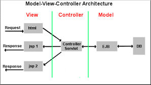

Design patterns
and programming principles
Michał Nowotka
ChEMBL Group
EMBL-EBI
Design what?
A general reusable solution to a commonly occurring problem within a given context in software design. Patterns are formalized best practices that the programmer can use to solve common problems when designing an application or system.
Design what?
Gained popularity in computer science after the book Design Patterns: Elements of Reusable Object-Oriented Software was published in 1994 by the so-called Gang of Four (Gamma et al.).

Classification
- Creational (Factory, Prototype, Singleton)
- Structural (Adapter, Decorator, Proxy)
- Behavioral (Iterator, Strategy, Command)
- Concurency (Lock, Join, Scheduler)
But first...
Basic programming
principles!
DRY KISS
Dry
Don't Repeat Yourself
Every piece of knowledge must have a single, unambiguous, authoritative representation within a system.
Example
Wrong:
circumference = 2 * 3.14 * R
...
area = 3.14 * pow(R,2)
Right:
PI = 3.14
...
circumference = 2 * PI * R
...
area = PI * pow(R,2)
KISS
Keep It Simple Stupid
Most systems work best if they are kept simple rather than made complicated, therefore simplicity should be a key goal in design and unnecessary complexity should be avoided.
Premature optimization
"Programmers waste enormous amounts of time thinking about (...) the speed of noncritical parts of their programs, and these attempts at efficiency actually have a strong negative impact when debugging and maintenance are considered. We should forget about small efficiencies, say about 97% of the time: premature optimization is the root of all evil.
Donald Knuth
Donald Knuth
- Author of the book: The Art of Computer Programming
- Creator of TeX
- Creator of METAFONT
Premature optimization
Optimizing up front is often regarded as breaking
You Aren't Gonna Need It (YAGNI).
Programmer should not add functionality until
deemed necessary.
"Always implement things when you actually need them, never when you just foresee that you need them."
If it's stupid and it works, it's not stupid.
Zen of Python (PEP20)
import this
Beautiful is better than ugly.
Explicit is better than implicit.
Simple is better than complex.
Complex is better than complicated.
Flat is better than nested.
Sparse is better than dense.
Readability counts.
Zen of Python (PEP20)
Special cases aren't special enough to break the rules.
Although practicality beats purity.
Errors should never pass silently.
Unless explicitly silenced.
Zen of Python (PEP20)
In the face of ambiguity, refuse the temptation to guess.
There should be one-- and preferably only one --obvious way to do it.
Although that way may not be obvious at first unless you're Dutch.
Now is better than never.
Although never is often better than *right* now.
Zen of Python (PEP20)
If the implementation is hard to explain, it's a bad idea.
If the implementation is easy to explain, it may be a good idea.
Namespaces are one honking great idea -- let's do more of those!
Design patters
Python examples
Adapter
class FoobarWrapper(object):
def __init__(self, wrappee):
self.w = wrappee
def foobar(self, foo, bar):
return self.w.barfoo(bar, foo)
Singleton
class Foo(object):
def __init__(self):
self.session = None
def get_session(self):
if not self.session:
self.session = requests.Session()
return self.session
Lazy initialization
fizz = Foo().filter(bar=baz).filter(bla=blah)
for f in fizz:
do_something()
class Foo(object):
def filter(self):
clone = self._clone()
clone.query.add_filters(**kwargs)
return clone
def _clone(self):
clone = self.__class__()
clone.filters = self.filters
return clone
def __next__(self):
s = self.get_session()
res = s.get(self.url, data=self.filters)
ret = res[self.current_index]
self.current_index + 1
return ret
Model View Controller
- Divides a given software application into three interconnected parts
- Decouples components to increase flexibility and reuse
- Model provides data
- View is its screen presentation
- Controller defines the way the user interface reacts to user input
- Extremely popular for designing web applications
MVC - Common misconception
- The controller sits between model and view NOT between user and view
- A view controller generates an output view and an embedded controller
- View controller and controller are separate entities
Model View Controller

Model View Controller
Many MVC web frameworks exist for Python
- Django
- Pylons
- Pyramid
- Web2py
- CherryPy
- ...
Python built-in patterns
- Singleton (every module is a singleton)
- RAII (via context managers - 'with')
- Decorator
- Iterator
- Factory method (via type(name, bases, dict))
- Lots of concurrency patterns in the standard library
Thank you!
Questions?